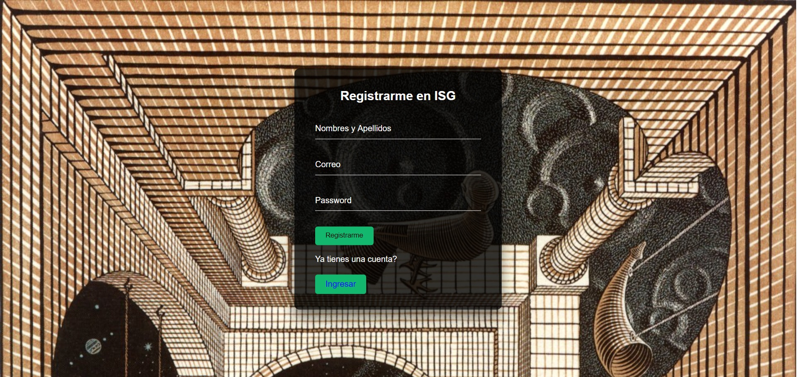
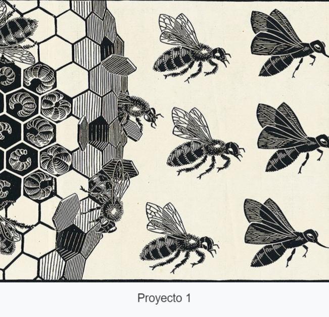
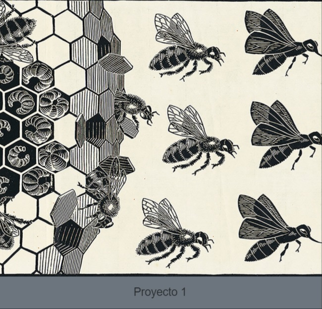
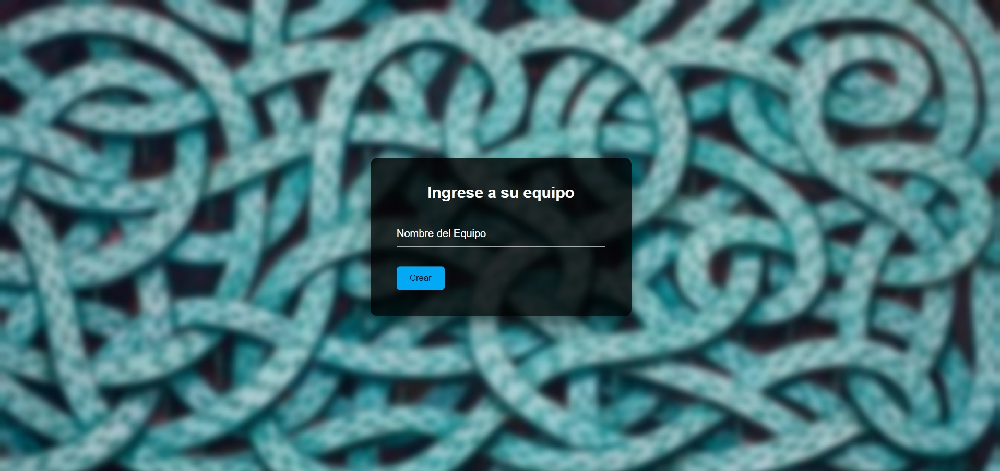
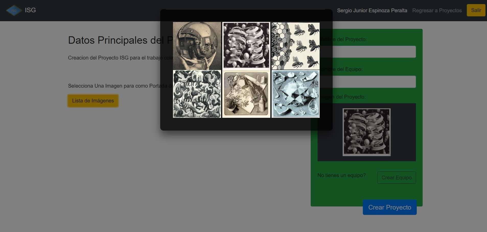
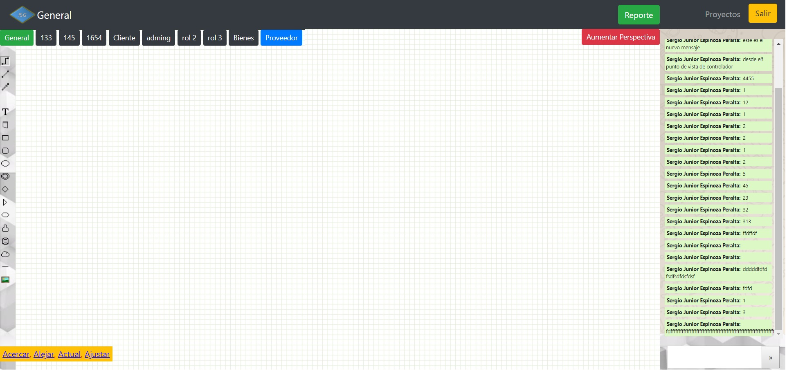
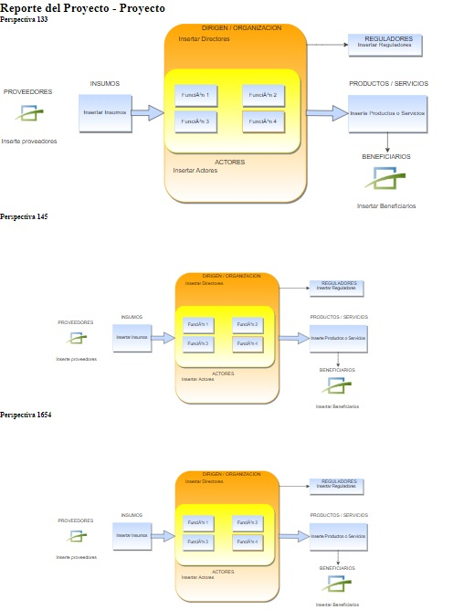
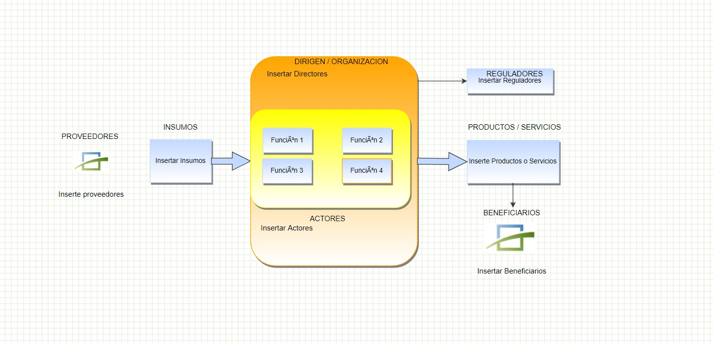

Se hace énfasis a la navegación, desde la creación del usuario hasta la creación de proyectos, la guía conceptual se denotará en otra sección.
Cuando ingresa por el navegador web a "mercurio sistemico" o a:
www.mercuriosistemico.comEstá la informacion basica como los de contacto, en la parte superior esta la lista de direcciones, para acceder al diagramador presionar en el boton ISG (vease la figura).
La vista principal se obtiene cuando se ingresa al link de la vista Inicial.
Con una cuenta se puede acceder directamente, si eso no es el caso se debe crear presionando en el boton registrar. Para la creación del usuario.
Cuando Accede a la vista inicial le aparece lo siguiente:
Para la creación del Usuario, debe tener en cuenta:
Cuando ya haya creado su cuenta o haya accedido a ella el sitio le dirigira a la vista principal, donde se hallan los proyectos a las cuales pertenece, si no tiene proyectos le aparecera vacío, para ello tiene que crearlos, o esperar a ser incluido en uno de ellos.
Entonces, cuando hay proyectos a los que pertenece se le mostrara una lista interactiva de proyectos donde se le muestra las perspectivas pertenecientes al proyecto, ademas si eres el creador del proyecto (gestor del proyecto) se le denotara por colores de la siguiente forma:
a) Color Blanco, los proyectos donde el usuario es analista.
b) Color Gris, los proyectos donde el usuario es gestor.
El acceso de manejo del proyecto es diferente para cada tipo de usuario-proyecto, los detalles mas adelante.
En un proyecto los roles en un Equipo de Intervencion son las siguientes:
Para crear un proyecto es de suma importancia pertenecer a un equipo o crear un equipo. Si tienes un equipo y deseas crear el proyecto con este equipo puedes ya acceder a una imagen de portada que representa al proyecto. Tener en cuenta si deseas que el equipo tenga unos usuarios mas o menos tienes que crear otro equipo.
Si el gestor no tiene un equipo, tiene que crear uno. Para ello tiene que poner el nombre del equipo, inicialmente.
Cuando creas el nombre del equipo el sitio web redirigirá al campo para rellenar intregrantes de este equipo.
Después tiene que agregar al equipo creado usuarios para que pertenezcan a el. Tener en cuenta que se debe tener sumo cuidado ya que todos los que esten ahi tendran acceso al proyecto,desde sus perspectivas y la vista del chat (esto se verá mas adelante).
Cuando se crea al Equipo, el sitio redirige a la vista para la creación del proyecto, entonces para ello se tiene que colocar el nombre del equipo que se acaba se crear. Esto redirige a la vista de proyectos, ya para posicion con la vista de la portada para crear los proyectos como se denota en la siguiente figura:
Cuando se crea el proyecto correctamente el sitio envía un mensaje de exito y redirige a la vista principal de proyectos. El ordenamiento de los proyectos es de acuerdo al orden de creacion, los últimos proyectos creados son los que se muestran primero, accediendo al proyecto se tiene que esperar un tiempo para cargar todos los recursos a utilizar. La siguiente vista es de un usuario con varios proyectos.
Se denota el ordenamiento, además de los colores, asi como las perspectivas debajo del nombre del proyecto, este tema se verá mas adelante.
Dentro de la vista de proyectos, se encuentran las perspectivas, en recuadros pequeños diferenciándolos por colores.
Al hacer click en cualquier proyecto, este nos redirecciona a la vista principal del proyecto con la inserción del diagramdor.
En esta parte se hace la distinción de las siguientes partes.
En esta parte esta el Botón de Aumentar las perspectiva
Cuando se hace click en el botón, abrirá un panel que permitirá designar las perspectivas del Proyecto a los diferentes miembros del equipo.
En la parte superior derecha del diagramador, está el botón de reporte. Cuando se presiona lo habilita en una nueva pestaña.
La presentación del informe actualmente está conformado por los diagramas de la perspectiva del proyecto en general y de las perspectivas específicas.
El principal componente es la vista de las perspectivas en diagramas. En esta parte se hace la edición. Esto se halla en la parte Central de la ventana.
En la parte izquierda esta la barra de herramientas, compuestas por iconos que al arrastrarlas en el campo del diagramador genera las figuras.
En el lado derecho está el campo del Chat, donde el gestor y los analistas pertenecientes al equipo del proyecto mandarán mensajes como guía adicional para hacer los diagramas acordes o comunicar cualquier evento dentro del proyecto.
En la parte inferior está el panel de Cambio de Tamaño del Diagramador con la opciones de Alejar, Acercar, Ajustar al campo del diagramdor y la obtener la vista Actual (predeterminada).
En la parte superior, estan los botones que direccionan a otra página, el primero es el botón que manda a la página anterior de proyectos, el segundo es el botón que sale de toda la aplicación mandando a la página inicial para ingresar el usuario y contraseña, registrarse o ver los documentos relacionados.
Finalmente, queda completo los componentes de la página de desarrollo mayor. Teniendo en cuenta que esto es referente a cada proyecto.